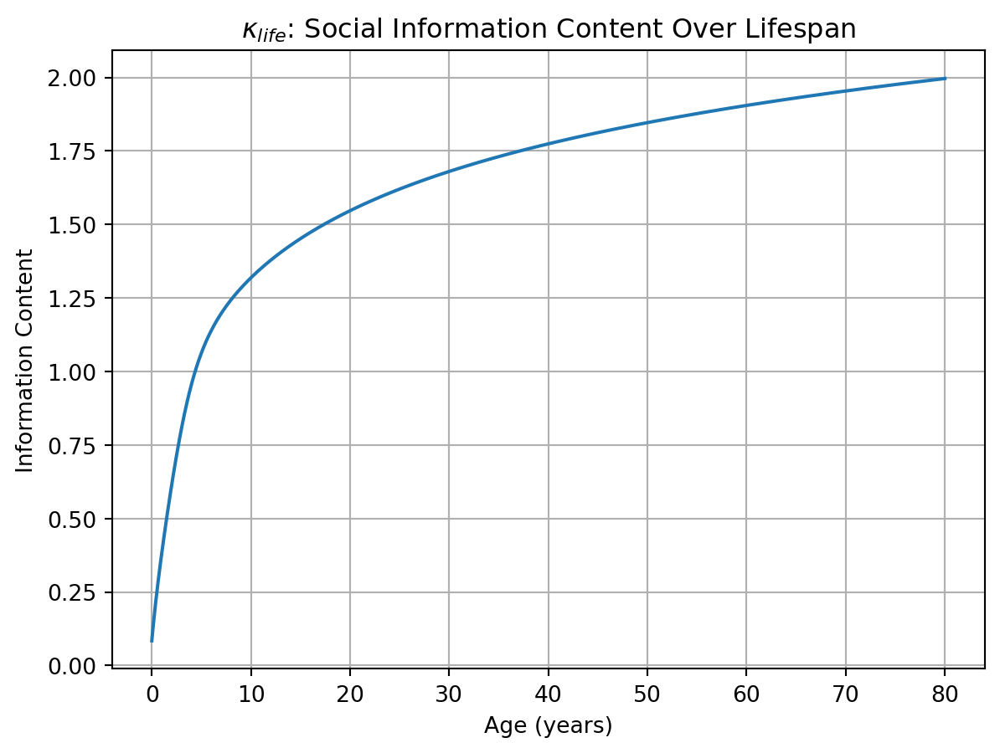

The information theoretic impact of a life has increased dramatically throughout human history. This seems intuitively true - we can compare the scant records of medieval peasant lives to the detailed documentation of modern existence - but can we formalize this intuition? This post attempts to develop a quantitative framework for measuring how human lives propagate through information systems.
We start with a simple model: a life maintains a continuous flow of neural information processing (Ψ), while simultaneously generating ripples of information through social (κ) and ecological (γ) systems. The relative magnitude and persistence of these components shifts markedly with technological advancement. Modern information systems increasingly subsume and document what were once distinct ecological processes, leading to longer persistence and wider propagation of life-related information.
Death represents a critical phase transition in this system - a sudden loss of Ψ accompanied by complex dynamics in κ and γ. Understanding these dynamics helps illuminate both historical changes in information preservation and deeper questions about welfare and suffering in an increasingly documented world.
Basic Framework
At any given time t, the total information content related to an individual can be expressed as:
I(t) = Ψ(t) + κ(t) + γ(t)
Where Ψ represents neural information content, κ represents social information, and γ represents ecological traces. Each of these components follows distinct temporal dynamics and has evolved differently throughout human history.
Component Dynamics During Life
Phase Transition: Death
Death represents a dramatic reorganization of information flows. The most immediate change is the collapse of \(\Psi\) - neural information processing ceases and begins to decay rapidly. Meanwhile, both \(\kappa\) and \(\gamma\) undergo complex dynamics:
<>:22: SyntaxWarning: invalid escape sequence '\P'
<>:23: SyntaxWarning: invalid escape sequence '\k'
<>:24: SyntaxWarning: invalid escape sequence '\g'
<>:22: SyntaxWarning: invalid escape sequence '\P'
<>:23: SyntaxWarning: invalid escape sequence '\k'
<>:24: SyntaxWarning: invalid escape sequence '\g'
/var/folders/m0/098psq1x5r5f17ynq84x4rf00000gn/T/ipykernel_64960/2418017820.py:22: SyntaxWarning: invalid escape sequence '\P'
ax.plot(t, psi_death(t), label='$\Psi_{death}$')
/var/folders/m0/098psq1x5r5f17ynq84x4rf00000gn/T/ipykernel_64960/2418017820.py:23: SyntaxWarning: invalid escape sequence '\k'
ax.plot(t, kappa_death(t), label='$\kappa_{death}$')
/var/folders/m0/098psq1x5r5f17ynq84x4rf00000gn/T/ipykernel_64960/2418017820.py:24: SyntaxWarning: invalid escape sequence '\g'
ax.plot(t, gamma_death(t), label='$\gamma_{death}$')
Here we see:
- Rapid decay of \(\Psi_{death}\)
- Initial spike then slower decay of \(\kappa_{death}\) (news, records, memories)
- Moderate pulse of \(\gamma_{death}\) through decomposition
The relative scales and decay rates would vary significantly by historical era, with modern deaths showing much larger and more persistent \(\kappa_{death}\) components.
Historical Evolution and Future Implications
The ratio \(\kappa/\Psi\) has grown dramatically throughout human history. In prehistoric times, a person’s social information footprint (\(\kappa\)) was limited to memories held by their tribe and traces left in their environment. With writing, this ratio began to increase - a person could leave more structured information outside their brain than they could hold within it. Each technological advance has amplified this effect: printing, photography, digital recording, and social networks have progressively increased our capacity to preserve and propagate personal information.
Nikolai Fedorov’s vision of resurrection through the complete gathering of scattered particles becomes more comprehensible when viewed through this lens. As \(\kappa\) approaches and exceeds \(\Psi\) in magnitude, death becomes less an absolute end and more a phase transition in information state. When the majority of a person’s structured information exists outside their neural substrate, the traditional boundary between life and death begins to blur.
Consider: for a well-documented modern individual, \(\kappa\) might include: - Detailed medical records - Lifetime of digital communications - High-resolution images and video - Financial and legal records - Social media presence - Professional works and personal creations - Behavioral data from countless sensors
As this external information repository grows richer and more structured, it begins to approximate the complexity of neural information content. While we cannot yet reconstruct consciousness from such data, we approach a state where the information theoretic distinction between a living person and their complete documentary trace becomes increasingly subtle.
This framework suggests an interesting convergence: as information technology advances, the preservation and structured organization of \(\kappa\) may eventually exceed our capacity to maintain biological \(\Psi\). When most of what makes us “us” exists in external systems, biological death becomes less catastrophic to the information system that constitutes a person.
This isn’t just about passive recording. Modern machine learning systems can already generate new content in a person’s style, continue their conversations, and predict their behaviors based on accumulated data. While these are currently pale imitations, they hint at how preserved social information might become increasingly “active” - capable of continuing to interact with and modify its environment in characteristic ways.
The information theoretic framework also suggests why some deaths feel more “permanent” than others. When a person leaves behind rich documentation, detailed records, and extensive social impacts, their \(\kappa\) continues to evolve and interact with the world. Their information patterns remain active in the social sphere, influencing events and generating new information. In contrast, deaths that leave minimal social traces feel more complete - there is less preserved information to maintain the person’s patterns in the world.
This perspective gives new meaning to the ancient Egyptian belief that “to speak the name of the dead is to make them live again.” Perhaps they intuited that maintaining active social information about a person preserves something essential about them. As our capacity to preserve and process personal information grows, we may find that the boundary between preservation and resurrection becomes increasingly philosophical rather than technical.

Social Information (\(\kappa_{life}\))
Social information footprint grows through multiple mechanisms: direct relationships, recorded information, and broader cultural impact. Early life shows rapid growth through family/early social connections, followed by varying rates of growth depending on social engagement and documentation:

This model shows three components:
We might want to add parameters for different historical eras - modern lives would show much steeper documentation growth.